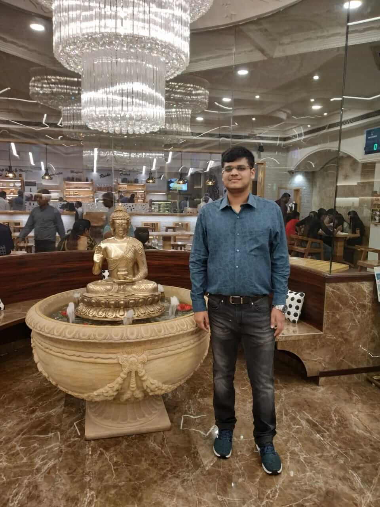

DAMUNC DAIICT, Gandhinagar
Meet the team

Vyom Saraf
Known for his nerdiness and sense of humour, Vyom Saraf has a flair in getting things done. He loves football as much as he loves being a MUN-er. MUN-ing is what he loves the most. This conference is his brainchild and he will do whatever it takes to make DAMUNC reach heights. He works hard and will harangue others to do so too but he's a softie at the heart. Also, never argue with him because he'll win it anyway.
Abhignya Rao
Meet Abhignya, the bubbly full-of-life human. If you have a problem, she's the go to resource person. She started MUN-ing properly not so long ago but her passion for the activity shows. Besides getting things done, she's a professional singer and dabbles with poetry and writing. She hopes that DAMUNC will be a conference where people yearn to learn.
Harsh Khatri
Harsh Khatri is the calmest person in the bunch. He likes competitive coding and plays basketball. Generally shy, he comes to life as a delegate. A building curiosity for international politics had him drawn into the world of MUNs.
Ravi Tiwari
Say hi to Ravi Tiwari, the melancholic of the committee. He's an optimistic guy who literally loves football from his core. An inclination to politics has drawn him towards debating in general. MUN-ing is an amalgamation of learning something new and international affairs and this is how he ended up a MUN-er.Bhargav Dave
Meet Bhargav, the ambivert bookworm who is an all- around nerd. Dropping pop culture references every minute, his passion for random knowledge and debating has led him to MUNs and his passion for MUNs is matched only by his passion for quizzing and he aims to learn a lot through DAMUN.
Rushabh Gajab
Rushabh Gajab, he is the introvert, the silent one of the groups. Debating and MUN-ing has been his love since his first year. His hobbies include reading interesting posts on Quora and fantasy novels. He holds the position of the Debate Core member and it is this responsibility of his, that has driven him to be a part of the MUNC.